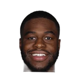
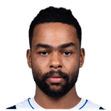

Ryan Ward:Emmanuel Mudiay on Kobe Bryant:
“I keep in contact with him & he’s going to be a great friend for a long time.”


Every quote from Emmanuel Mudiay about Kobe Bryant in the archive, newest first. Each one links to its original source.
Ryan Ward:Emmanuel Mudiay on Kobe Bryant:
“I keep in contact with him & he’s going to be a great friend for a long time.”
Serena Winters:Emmanuel Mudiay on convo w/ Kobe Bryant tonight:
“He was actually encouraging me. He asked me how I was doing & he said he was proud of me.”
Mark Medina:Emmanuel Mudiay on possibly playing w/ Kobe Bryant:
“I'm competitive just as much as he's competitive. He wants to win. I want to win.”

D'Angelo Russell on Kobe Bryant5 quotes